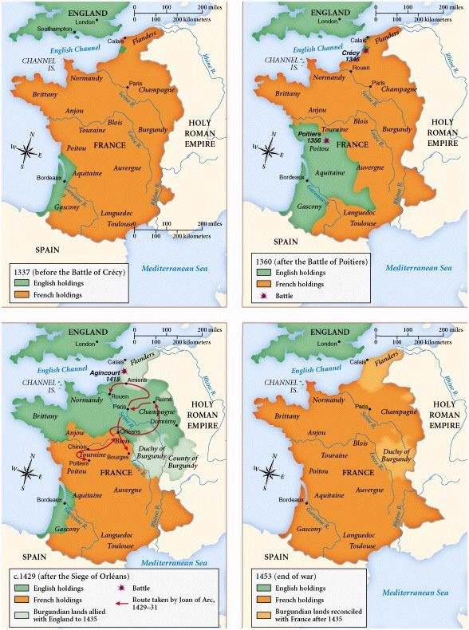
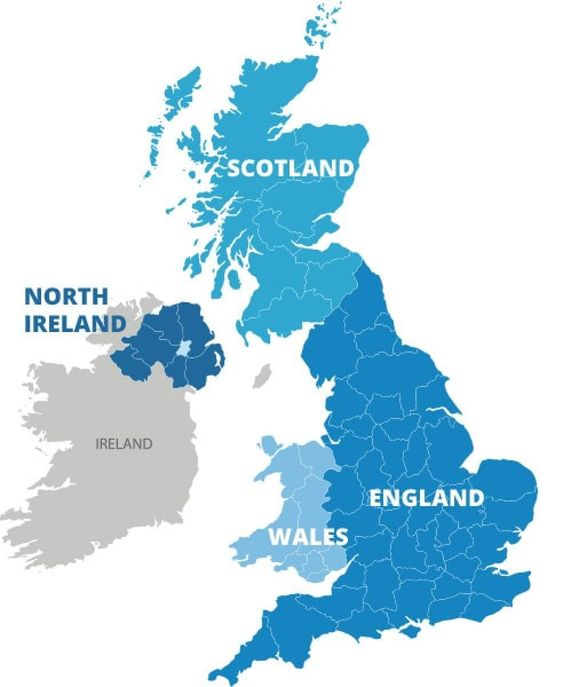

不懂系列之国家-nation、country、State
文章目录
悠悠的各种概念，比如部落、民族、国家等，在以前我才不想去深究其内涵或外延，但如今选择去深入了解艺术史，这让我肃然起来，决定再遇到不懂的“政治性”词汇，查阅权威释义，愿我能渐渐理解。
时常听到周围对“中国”的多种表述，比如： 1、 中国就是中华人民共和国，是1949年新成立的共产主义国家。 2、 中国是南至西沙群岛，北邻西伯利亚，东括第一岛链，西邻喜马拉雅山脉，有广袤的大陆领地；同时还有美丽的香港明珠，峡外的台湾。这些组成了一个不可分割的中国。 3、 中国是56个民族相融合的大家庭，有着13亿的黄皮肤黑眼睛的中国人，尽管汉族人组成了绝大多数的人口，但不同民族和谐相处。
国家与民族有什么关系？国家有政治属性吗？国家必须要有领土吗？ 这么多疑问“得益于”汉语的博大，汉语中一个词通常有多个表意，而不止一种绝对性的意思。而英语中不同的词，尤其是法律上、科学上的词，是有严谨的释义。
本文将从英语的“国家”中解开我的疑问。 英语中有三个与国家相关的词，nation、country、State，这三个词有着不同的含义，可以分别清晰地解释“中国”的表述。让我们一点点理解。
1、nation
在《Black’s Law Dictionary》[1]中nation定义如下：
Nation：A people, or aggregation of men, existing in the form of an organized jural society, usually inhabiting a distinct portion of the earth, speaking the same language, using the same customs, possessing historic continuity, and distinguished from other like groups by their racial origin and characteristics, and generally, but not necessarily, living under the same government and sovereignty.
从以上定义中，提取出两个层次： 其一是共同语言、共同习俗（文化层面），其二是同一政府和主权（政治层面）；并且前者具有更强的关联。 也就是说，nation首先是具有民族性，其次也可以赋予政府的国家性。
结合一段王柯老师在《民族，一个来自日本的误会》[2]中对法国和德国形成讲解了nation的内涵和外延的多样性。文中指出nation有政治与文化的双重内涵。 德国，在18世纪末后建设国民国家，nation/volk首先是指“以共同语言为基础而历史形成的具有自我特征的文化共同体”。 法国，在1789年“国民议会”上公布人权宣言，nation首先意指“由信奉自由、平等、博爱理念的人们共同组织起来的政治共同体”，其次是“民族和文化意识”。
下面摘自文中对西欧和中东欧在nation上差异的分析，读起来太神清气爽了。
西欧与中东欧，因为国情不同而采取了不同的nation形成方式。一般说来，中东欧以血缘为媒介，西欧以地缘为单位，中东欧重文化，西欧重政治，因此中东欧的nation更接近“民族”，西欧的nation更接近“国民”（公民）。 然而各个国家的nation的成立，都与近代国家（state）、市民或公民(citizen)、共同语（the common language）等概念的形成有着密切的关系，所以不论是nation或volk，最终都成了“具有共同民族性的国民”或“具有共同国民性的民族”。 但是应该注意的是，他们之所以能够顺利形成nation的最主要原因，还在于选择了一条适合于自己的道路。试想如果法国走从文化共同体到政治共同体的道路，德国走从政治共同体到文化共同体的道路，那么可能就不会有今天的法国与德国。
文化性的民族nation太飘，而且举例起来过于盘根错节，武功境界差距太大，暂略。
表达一下我对政治性nation的理解，我觉得在现实的社会中，可以用“时间+空间”再结合“定义”从客观上具体化nation。 比如： 图1有4个法国，不同时间（年代）里由不同空间（地理）组合在一起，在那时称那儿为法国。如果我和诺在谈论法国，没有时间，会有认知相同的法国吗？当然当下的默认指2018年的法国；否则我会谈论“加洛林王朝时期的法国”、“卡佩王朝时期的法国”。
（写到这里，我想起几天前听江逐浪老师节目里的一个段子：如果没有“人类”，会有“声音”吗？）
 图1. 法国、法国、法国、法国 [3]
2、country
在《Black’s Law Dictionary》[1]中country定义如下：
Country：The portion of the earth’s surface occupied by an independent nation or people, or the inhabitants of such territory.
从以上定义中，定位关键词：surface、territory，显然这都是**“地域性”**词汇，简言之，没地就没国country（难道是宏观的“没房就没家”？）。
经典例子： 英国是由四个不同country联合构成，从图2可一目了然 countries of the United Kingdom。
再举个栗子： 犹太人亡国1800多年后建立了以色列，国家country虽然消亡很久很久，但民族nation却一直未灭。 The Jewish was a nation without a State before 1948, but now Israel is a nation-states.
 图2. The four countries of the United Kingdom
在《Montevideo Convention on the Rights and Duties of States》[4] Article 1中明确State必需具备四个标准/资格：
The State as a person of international law should possess the following criteria / qualifications: a. a permanent population; b. a defined territory; c. government; d. capacity to enter into relations with the other states.
哇噻，四点缺一不可呀：永久人口、界定的领土、政府、与他国建交的能力。
上面其实有一点与公约文本中不同，但是根据参考文的解析[5]，我觉得需要修正：将文本中的state修正为State，前者是国家的一部分，后者才代表了独立的国家。 造个句：the different states of the United States of America。
题外话，此公约在1933年起草，1934年美洲19国签字，后来有3个国家不认了。湾湾借此标准立自己的国家flag，她也仅仅只能自说自话。
看了美洲公约对State的定义，再比对《Black’s Law Dictionary》[1]中State的定义，可以看出不管出自哪种权威，其关键组成都是相通的。
State：A people permanently occupying a fixed territory bound together by common-law habits and custom into one body politic exercising, through the medium of an organized government, independent sovereignty and control over all persons and things within its boundaries, capable of making war and peace and of entering into international relations with other communities of the globe.
区别于nation的组成要素，State强调的是政府和政治活动能力，它更倾向于从“政治”层面聚合形成的，而nation往往由“文化”黏合。
The nation is the moral body, independent of political revolutions, because it is constituted by inborn qualities which render it indissoluble. The State is the people organized into a political body.
小结： nation具有民族性，强调语言、风俗、甚至是宗教的文化性要素； country仅需要地域性条件，即有特定界限的疆域； State的要素更突显它具有政治性，它除了要求有人口和疆域，还要有政治活动的政府。
参考： [1] http://heimatundrecht.de/sites/default/files/dokumente/Black%27sLaw4th.pdf [2] http://www.cuhk.edu.hk/ics/21c/media/articles/c077-200212051.pdf [3] https://i.pinimg.com/736x/a5/7d/ea/a57deaddfca36ee05a1eeb1557897684.jpg [4] https://www.ilsa.org/jessup/jessup15/Montevideo%20Convention.pdf [5] https://www.infoplease.com/world/general-world-statistics/state-country-and-nation
{kind=link}